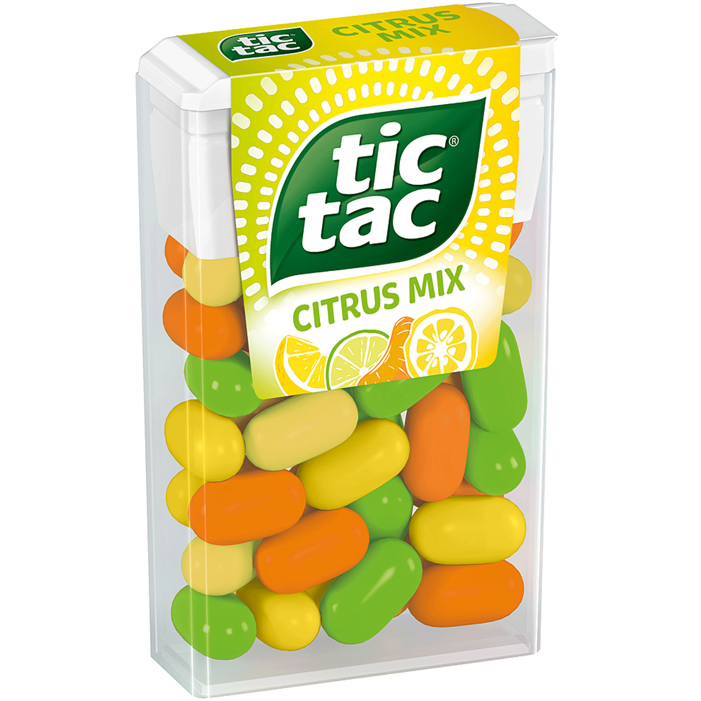
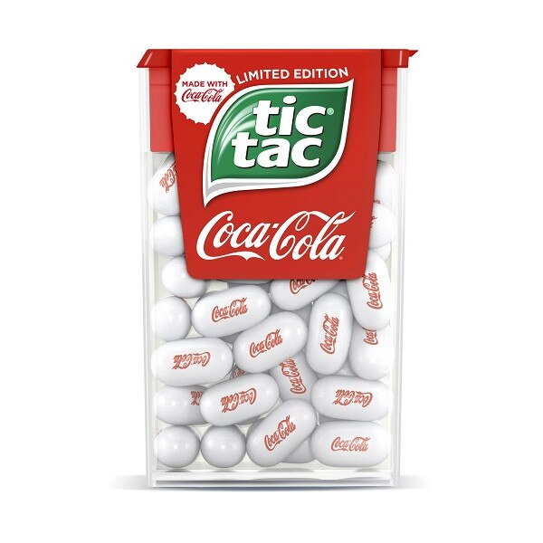
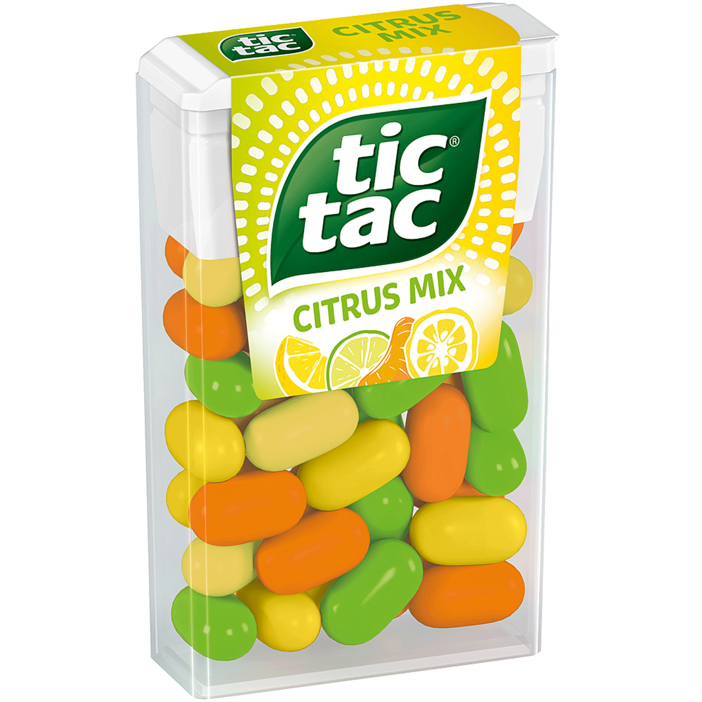
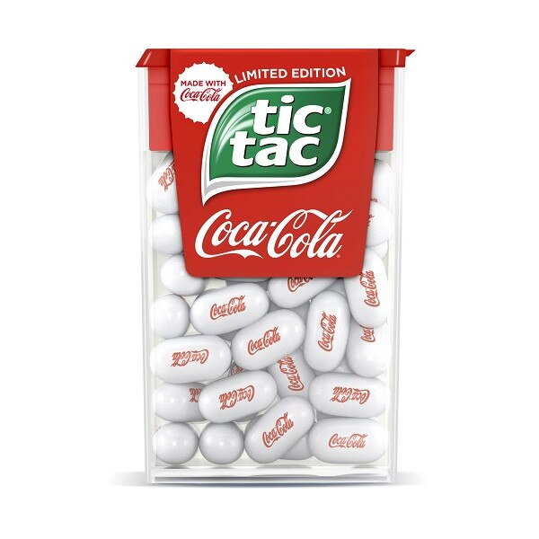

Prova tutti i gusti!

I tic tac sono confetti cilindrici con basi semisferiche, composti da zucchero aromatizzato ricoperto da diversi strati di zucchero vanigliato solidificato. Il colore del confetto e della confezione sono indicativi dell'aroma. L'apporto energetico di ogni confetto è di 1,9 calorie. tic tac sono presenti in diverse varianti caratterizzate dal diverso colore. tic tac americane aromatizzate alla cannella. Tic tac flavor Mint/Fresh Mint/Peppermint (1969): prodotto originale al gusto menta, di colore bianco. Orange/Fresh Orange (anni '80): prima variante al gusto arancia, di colore prima bianco, poi arancione. Frutti di bosco (anni '80): variante ai frutti di bosco, di colore bianco, confezione trasparente rosa. Uva (anni '80-1990): variante all'uva, ritirata dal mercato per sospetto di cancerogenicità del colorante usato. Strawberry mix (2013): fragola vanigliata in rosa chiaro e fragola mentolata in rosa scuro. Spearmint mix: menta delicata in bianco e menta intensa in verde acqua.

 


